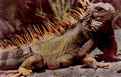

Groene Leguanen eten voornamelijk plantaardige kost, alhoewel ze ook wel eens dierlijk materiaal tot zich nemen. In de natuur zullen ze van vele soorten planten "grazen", zoals blad, vruchten, bloemen en knoppen. En dan zal er ook wel eens, per ongeluk of bewust, een insect of iets dergelijks mee naar binnen gaan. De exemplaren die in de droge, voedselarme streken leven zijn minder kieskeurig. Zij eten ook van de cactussen en versmaden een ei, een klein amfibie, reptiel of zoogdier ook niet. Soms eten ze zelfs aas.
In
de Reptielenzoo Iguana worden de Groene Leguanen gewoonlijk als volgt gevoerd:
Ø Op zondag krijgen de dieren voor het merendeel andijvie, aangevuld met diverse groenten, afhankelijk wat er op dat moment verkrijgbaar is. Dit is dus seizoensgebonden.
Ø Op dinsdag krijgen de dieren voor het merendeel andijvie, aangevuld met diverse fruitsoorten, afhankelijk wat er op dat moment verkrijgbaar is. Dit is dus seizoensgebonden.
Ø Op donderdag krijgen ze wederom voor het merendeel andijvie, maar dit maal aangevuld met in water geweekte, droge kattenbrokjes.
